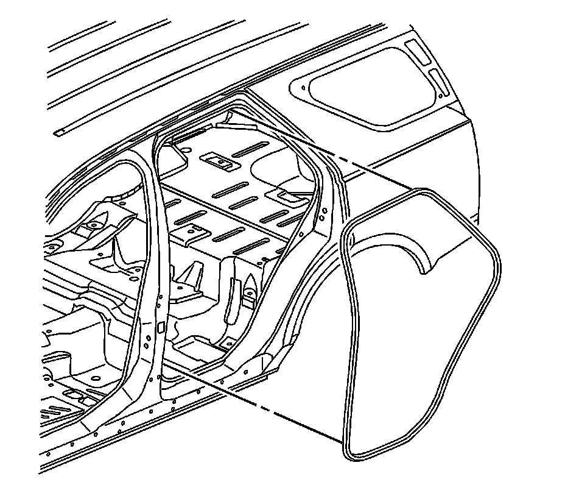

Rear Door Opening Weatherstrip Replacement
Rear Door Opening Weatherstrip Replacement
Removal Procedure

1. Remove the carpet retainer. Refer to Rear Carpet Retainer Replacement (Service and Repair) .
2. Start at the rear upper corner of the door opening and pull the weatherstrip away from the door opening flange.
3. Work around the door opening to remove the weatherstrip.
Installation Procedure
1. Position the weatherstrip in the upper corner of the center pillar.
Important: The rubber side of the weatherstrip should be outboard of the car.
2. Working downward along the front edge, install the weatherstrip on the door opening flange ensuring that the carrier is fully seated in the corners.
3. From the center pillar corner working rearward, install the weatherstrip along the roof rail and the rear of the door opening.
4. Using a rubber mallet, ensure that the weatherstrip is seated on the entire door opening flange.
5. Using a plastic trim stick or an equivalent, position the close-out lip over the interior trim around the door opening, or use the pull-string, on new weatherstrip, under the close-out lip, in order to reposition the lip over the interior trim.
6. Install the carpet retainer. Refer to Rear Carpet Retainer Replacement (Service and Repair) .